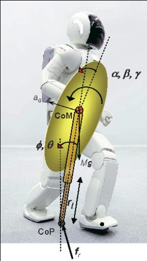

| ambarish.com Ambarish Goswami's Current Research |
|---|
| Home/ Current Research |
|
Current Research
|
|
Angular momentum and ground reference
points in biped robot balance control
Foot Rotation Indicator (FRI) point, Zero Moment Point (ZMP) or Center of Pressure (CoP), Centroidal Moment Pivot (CMP). We have studied the fundamental mechanics of rotational stability of multi-body systems with the goal to identify a general balance and stability criterion for humanoid robots. For this, our research focuses on the rate of change of centroidal angular momentum of a robot, which is the aggregate angular momentum computed at the robot's CoM. We propose humanoid robot balance control approaches using angular momentum rate change. Centroidal moment pivot (CMP) is the point on the foot/ground surface of a robot where the total ground reaction force would have to act such that its centroidal angular moementum stays constant. This new criterion generalizes earlier concepts such as GCoM, CoP, ZMP, and FRI point, and extends their applicability. |
|  |
Simple humanoid models for balance and control
If you could reduce the instantaneous inertia of the entire humanoid
robot to that of a single rigid body, what would it be?
We also introduce Inertia Shaping, a high-level approach to modify the kinodyanmic properties of a humanoid. |
|
Humanoid robot push recovery: Where to step?
Use of Capture Point (CaP) and angular momentum in biped robot push recovery.
Push recovery is difficult because humanoid dynamics are high dimensional, non-linear, and hybrid. Moreover, a humanoid robot is underactuated and makes friction-limited unilateral contacts with the ground. Despite these theoretical difficulties, animals and humans are very adept at push recovery. Although the humanoid literature contains several analysis and control techniques for external disturbance rejection, there is yet to emerge a principled approach towards ``when and where to step'' under a force disturbance. Collaboration with Jerry Pratt at the Institute of Human and Machine Cognition, Pensacola, Florida.
|
|
Active impedance based control of assistive exoskeletons
We propose a novel control method for lower-limb assist that produces a virtual modification of the mechanical impedance of the human limbs. This effect is accomplished by making the exoskeleton display active impedance properties. Active impedance control emphasizes control of the exoskeleton's dynamics and regulation of the transfer of energy between the exoskeleton and the user. It's goal is improving the dynamic response of the human limbs without sacrificing the user's control authority. The proposed method is an alternative to myoelectrical exoskeleton control, which is based on estimating muscle torques from electromyographical(EMG) activity. Implementation of an EMG-based controller is a complex task that involves modeling the user's musculoskeletal system and requires recalibration. In contrast, active impedance control is less dependent on estimation of the user's attempted motion, thereby avoiding conflicts resulting from inaccurate estimation.
We also introduce
a new form of human assist based on improving the kinematic response of the limbs.
Reduction of average muscle torques is a common goal of research in human assist.
However, less emphasis has been placed so far on improving the user's agility of motion.
We aim to use active impedance control to attain such effects as increasing the user's average
speed of motion, and improving their acceleration capabilities in order to compensate for perturbations
from the environment.
|
Ambarish Goswami
Last Revised March 05, 2008
Back to main page |